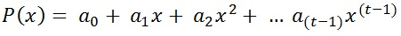
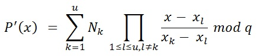

There are the natural numbers n and t. In a (n,t)-secret sharing protocol, a secret is shared with n persons. Each person gets one share of the secret. If t persons meet, they are able to reconstruct the secret. If less than t of these shareholders get together, they aren't able to get any relevant information about the secret. This principle can be compared to a treasure map, which is shared between multiple individuals. Only if all pieces of the map get together, they can find the treasure. According to that, keep in mind that each shareholder could change his/her part of the map and changing the whole meaning of the map. The verifiable secret sharing algorithm according to Paul Feldman which extends Shamir's Secret Sharing is able to prevent this.
The algorithm of Adi Shamir is based on the Lagrange polynomial interpolation and is a (n,t)-secret sharing protocol. All calculations are done within the finite field ℤ/p*.
The dealer sets all the parameter. Aside from s and the coefficients which are introduced in step 2, all the parameteres are public for all players. The coefficients and the secret are only known by the dealer.
The dealer wants to share the secret s ∈ ℕ.
He chooses the secret, random elements ai ∈ ℕ[1 ≤ i ≤ (t-1); 1 ≤ a < q] and creates the polynomial:

The polynomial has the grade t-1. The coefficient a0 is the secret s.
The dealer calculates the shares for each player, Ni = P(i) mod q. i[1≤i≤n] is the ID of the respective player. Independent of that, the dealer calculates the commitments Ye[0 ≤ e ≤ (t-1)]. The calculation of the commitments works like this:
ae are the coefficients. The commitments are used later on for checking the integrity of the shares.
Now each player receives his/her share and all of the commitments.
Each player should check his/her after receiving it. The check consists of the following 2 calculations.
Calculation 1:

Calculation 2:

In step 1 the generator g is exponentiated with the personal share of the respective player. Within step 2 the commiment are exponentiated with the player-ID, which is exponentiated with the index of the product function. This calculation has to be done with each commitment and the results are multiplied with each other. If the result of step 1 is equal to the result of step 2, the share is verified. This check has to be done for each share, which has to be checked, seperately. When the player come together to reconstruct the polynomial, the check should be done again to assure that no player has changed his/her share.
The construction is used to restore the polynomial which has been generated by the dealer. The player can reconstruct the secret s from the polynomial. To do a succesful reconstruction, at least t players are necessary. These players have to provide their personal share for reconstructing the polynomial.

This is the polynomial interpolation algorithm according to Lagrange. u is the number of shares which have been chosen for the reconstruction. k and l are the ID's of the respective player. The result is the polynomial P'(x). If enough player are chosen, P'(x) is equal to the polynomial P(x) which has been defined in step 2 and the coefficient a0 is the secret s.
If one or more of the used shares are modified, the reconstruction will deliver a wrong polynomial. That also means a wrong secret s.